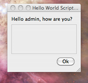

Once the script is successfully loaded you have to reload/refresh the service discovery window which now should display one more element on the list.

As you can see script name is set to what you have entered as "Description" in script loading window - "Hello world script". The command node is set to: "http://jabber.org/protocol/admin#hello" if "hello" is what is set as the script ID.
To execute the script you just have to double click on the script name (or click execute command if you use any other client).
As a result you should see a simple window similar to the screenshot below displaying our message.
